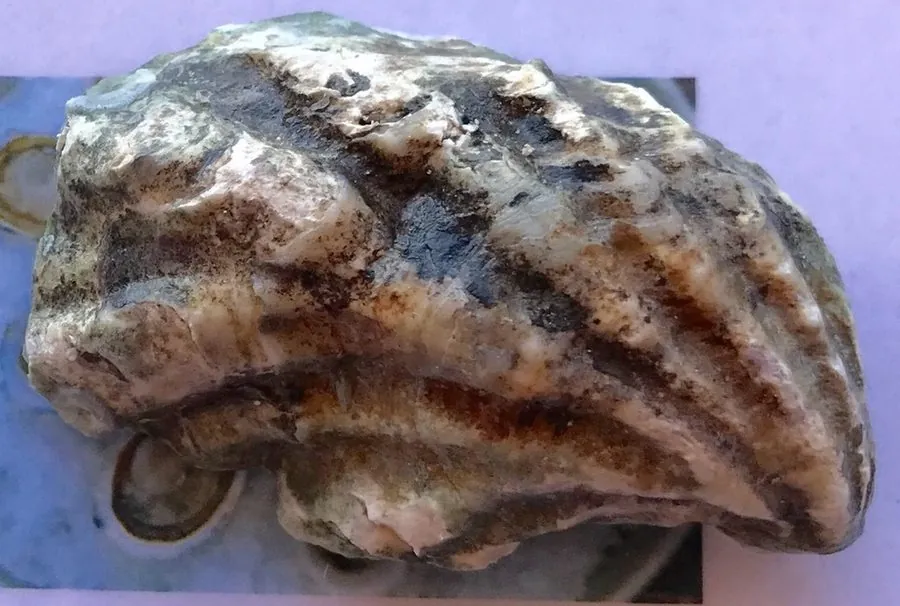

软体动物 · 动物界
熊本牡蛎 Crassostrea sikamea

壳小、壳面有紫色条纹的牡蛎，原产日本熊本县，壳形深杯状、肉质细嫩，是高端生蚝市场上的知名养殖品种。
- 分类
- 门软体动物门纲双壳纲目牡蛎目科牡蛎科属巨牡蛎属
- 栖息环境
- 潮间带中下区至浅海的泥底与沙泥底，以左壳固着
- 地理分布
- 原产日本九州有明海，现引种至中国、美国和韩国养殖
- 保护级别
- 尚无保护级别；野生种群稀少，主要依靠人工养殖
物种志
熊本牡蛎的贝壳较小，壳高通常只有五至八厘米，壳形深而圆，呈杯状，左壳深凹，右壳扁平如盖。壳表灰白至灰褐色，常有明显的紫色或紫褐色条纹自壳顶放射而出，壳缘呈波状，壳内面白色，闭壳肌痕明显。它的壳比同属的太平洋牡蛎更小更厚，杯状的壳形能兜住较多的海水，使肉质保持鲜嫩。
它原产于日本九州熊本县的有明海，现已被引种到中国、美国和韩国等地养殖，栖息在潮间带中下区至浅海的泥底和沙泥底，靠左壳固着在贝壳、石块或养殖架上，滤食水中的浮游藻类和有机碎屑。它是雌雄异体，也有性逆转现象，繁殖期在夏季，幼虫浮游约两周后附着变态。熊本牡蛎生长较慢、个体小，但肉质细腻、味甜，在高端生蚝市场很受欢迎。目前尚无保护级别，野生种群已很稀少，主要依靠人工养殖维持。
形态与习性
- 壳高通常五至八厘米，壳小而厚
- 壳形深杯状，左壳深凹、右壳扁平
- 壳面灰白至灰褐，有紫色放射条纹
- 栖息水层潮间带中下区至浅海泥底
- 食性滤食浮游藻类与有机碎屑
- 养殖原产日本熊本，现引种中国、美国、韩国
趣味知识
- 它的壳只有巴掌一半大，却深得像只小碗，能兜住海水保住鲜味。
- 壳面上那几道紫色条纹，是它区别于其他牡蛎的标记。
- 它长得慢、个头小，却在生蚝市场上卖得比大个品种更贵。